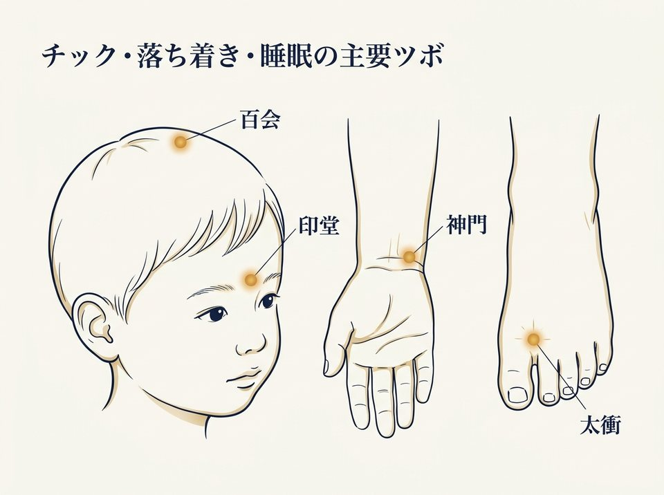

ファイファー症候群の鍼灸
頭蓋骨の縫合が早期に癒合し顔面・手足の特徴や呼吸障害を生じる先天性疾患。専門医の手術・管理を最優先に、安定期の穏やかな補完ケアとご家族支援を行います。


院長YouTube解説・関連動画
ファイファー症候群は先天的に頭蓋骨や顔面骨の形成に異常がおこる
ファイファー症候群は、先天的に頭蓋骨や顔面骨の形成に異常がおこる病気です。
ファイファー症候群では、頭蓋骨や顔面骨の形成に異常がおこることによって、脳の発達がに妨げが起こったり、眼球が飛び出たり、呼吸に障害が起こったりします。
頭蓋骨はいくつかの骨から構成されています。骨のつなぎ目は縫合線と呼ばれており、脳が成長すると縫合部分が広がり頭蓋骨が大きくなっていきます。
縫合部分は成人になると自然に癒合していきますが、ファイファー症候群の場合早い段階で癒合が起こります。
ファイファー症候群の症状は、頭蓋骨の形成異常、顔面の形成異常
ファイファー症候群の症状は、頭蓋骨の形成に異常が起き、顔面の形成に異常が見られることです。症状が重い場合は精神運動の発達に遅れが見られたり呼吸障害が見られたりすることもあります。
ファイファー症候群は、症状によって1型、2型、3型の3つの型に分けることができます。
1型の場合は頭蓋骨が正しく形成されないため、頭蓋骨のゆがみが現れ、顔面の形成異常が見られます。しかし、形成異常の程度は、2、3型に比べると軽いです。
顔面の形成異常では、額が目立つ、顔面中部の低形成、眼間の開離、上顎の後退、下顎の突き出し、噛み合わせの不良などがみられます。
2型の場合は、頭蓋骨の形成に異常や顔面の形成異常に合わせて、手足の指の一部が癒合したり、肘関節の拘縮が見られたりします。
2型の特徴的な症状は、クローバーリーフ頭蓋と呼ばれる形態異常が見られ、水頭症を発症するケースがあることです。また、2型の場合は精神運動の発達の遅れがみられることもあります。
2型で現れる顔面形成異常は、1型の症状に合わせれ、明らかな眼球の飛び出しやくちばし状の鼻、耳介低位なども見られます。
3型の場合は、2型と症状はほとんど同じですが、3型では2型の症状の特徴であるクローバーリーフ頭蓋は認められません。3型の場合も2型の場合も呼吸障害が見られることがあります。
ファイファー症候群の改善方法は、症状に合わせた手術です。1度の手術で完治することは難しいため、何度も段階的に手術を行うことになります。
頭蓋の変形をそのままにしておくと、脳の発達にも影響する可能性があるため、頭蓋の変形は修正して頭蓋容積を大きくすることが必要です。そのために行われる手術は、頭蓋形成術です。
顔面骨の形成異常が高度な場合や眼球の突出や咬合不全など機能に障害がある場合は、改善するために顔面形成術も必要になります。手足の指が癒合している場合は、分離手術が必要です。
頭蓋の変形をそのまま放っておくと、脳の発達に影響することもあります。そのため、頭蓋形成術を行うことが必要です。
近年は、広げたい骨の部分に延長するための装置をつけて、手術を行った後に少しずつ骨を伸ばしていく骨延長法が行われることが多いです。
▼ 詳しく知りたい項目だけタップして開けます（全項目の医学解説を収録）
01. 原因とメカニズム
なぜ症状が起きるのか・鍼灸の作用機序を読む
▼
01. 原因とメカニズム
なぜ症状が起きるのか・鍼灸の作用機序を読む
ファイファー症候群は、骨の成長や分化を調節する遺伝子の変異により生じる常染色体優性遺伝性の頭蓋縫合早期癒合症です。頭蓋骨の縫合が通常より早く閉じてしまうことで脳の成長が妨げられ、頭蓋・顔面の変形、眼球突出、呼吸障害を引き起こします。症状の程度により1〜3型に分類され、2型ではクローバー葉状頭蓋や水頭症、合指症、肘関節強直、精神運動発達遅滞などを伴い、頭蓋形成術や骨延長法などの段階的手術が行われます。
なぜ鍼灸で改善へ向かうのか？（作用機序の図解）
ファイファー症候群に対する鍼灸は、「刺さない小児はり」による皮膚感覚〜自律神経の鎮静機序を通じて、お体本来の回復力を引き出します。
刺さない専用の「小児はり（てい鍼）」で、背中や手足の皮膚をリズミカルに優しく撫でます。
皮膚への穏やかな触覚刺激が脳へ伝わり、安心ホルモン（オキシトシン等）と副交感神経を促します。
興奮しやすい子どもの神経バランスを落ち着かせ、夜泣き・おねしょ・起立不調の土台を整えます。
保護者の方と寄り添いながら、お子さまの体調と成長ペースに合わせた無理のないケアを続けます。
02. よくあるお悩み
このような症状はありませんか？（4項目）
▼
02. よくあるお悩み
このような症状はありませんか？（4項目）
- ✓頭蓋や額の形・眼球突出など顔面の形態変化が気になる
- ✓鼻づまりや気道の狭さによる呼吸のしにくさがある
- ✓手足の指の癒合や肘の関節の動かしにくさがある
- ✓複数回にわたる手術や通院に寄り添うケアを探している
03. 当院の施術アプローチ
施術の進め方・改善のポイントを見る
▼
03. 当院の施術アプローチ
施術の進め方・改善のポイントを見る
04. ツボ詳細・セルフケア一覧
呼吸器・喘息・COPD・息苦しさ緩和の全身ツボ図解（6穴）
▼
04. ツボ詳細・セルフケア一覧
呼吸器・喘息・COPD・息苦しさ緩和の全身ツボ図解（6穴）
実際の施術ではお一人おひとりの体質・症状に合わせて選穴しますが、気管支喘息・COPD・慢性咳嗽・呼吸困難の標準治療併用サポートの臨床でよく用いられる代表的なツボの目安です。
| ツボ名 | 位置の目安 | 主な狙い | セルフケアの注意点 |
|---|---|---|---|
| 定喘（ていぜん） | 首を前に倒して出る背骨のすぐ横 | 咳込み・喘鳴・呼吸補助筋の緊張緩和 | 背部・胸部への深い刺鍼は避け安全な角度・深さで行います。 |
| 肺兪（はいゆ） | 肩甲骨の間、第3胸椎のすぐ外側 | 気道周囲の自律神経バランス・背部のこわばり緩和 | カイロや温灸で背中を温めるケアも有効です。 |
| 膻中（だんちゅう） | 左右の乳頭を結ぶ線の中央（胸骨上） | 胸郭の圧迫感・息苦しさに伴う不安の鎮静 | 手のひらで優しくさすりながらゆっくり息を吐きます。 |
| 列缺（れっけつ） | 手首の親指側、シワから指2本分肘寄り | 呼吸器系（肺経）の最重要遠隔穴 | 吸入薬などの標準治療を必ず継続したうえで併用します。 |
| 魚際（ぎょさい） | 親指の付け根のふくらみの縁 | 息苦しさ・咳・のどの熱感の緩和（肺がん呼吸困難研究でも使用） | 手首・親指周りを優しく揉みほぐします。 |
| 合谷（ごうこく） | 手の甲、親指と人差し指の間 | 呼吸困難に伴う不安と全身緊張の軽減 | 急激な息苦しさや発作時は直ちに医療機関を受診してください。 |
05. 医学的根拠・国際査読論文（PubMed / Cochrane）
科学的エビデンス・出典リンク一覧（3件）
▼
05. 医学的根拠・国際査読論文（PubMed / Cochrane）
科学的エビデンス・出典リンク一覧（3件）
国際的な医学データベース（PubMed・Cochrane等）で報告されている小児はり・夜泣き・乳児疝痛・お腹ケア領域の代表的な査読済み鍼灸研究をまとめています（標準治療との併用や研究上の限界を含めて正確に掲載）。
| 年・研究デザイン | 対象・規模 | 主な結果 | 限界・出典 |
|---|---|---|---|
| 2017年 多施設3群RCT（ACU-COL） | 乳児疝痛・夜泣き 147名（スウェーデン） | 標準育児支援単独比で泣き時間の相対的減少を安全に確認。 | 当院では刺さない小児はりでさらに低刺激に対応。 Acupunct Med (PMID: 28093383) |
| 2018年 IPD系統的レビュー | 乳児疝痛 3 RCTs（n=307） | 盲検化の制約から一律の推奨には慎重姿勢を示唆。 | 発熱・脱水など急変時は小児科受診が最優先。 Acta Paediatr (PMID: 29338487) |
| 2016年 メタ解析 | 小児術後悪心嘔吐（PONV）8研究 | 内関（PC6）刺激による小児の吐き気軽減を報告。 | 術後・吐き気ケアの参考エビデンス。 Laryngoscope (PMID: 26864736) |
参考文献・出典
- 2017年 多施設3群RCT（ACU-COL）（乳児疝痛・夜泣き 147名（スウェーデン））— Acupunct Med (PMID: 28093383)
- 2018年 IPD系統的レビュー（乳児疝痛 3 RCTs（n=307））— Acta Paediatr (PMID: 29338487)
- 2016年 メタ解析（小児術後悪心嘔吐（PONV）8研究）— Laryngoscope (PMID: 26864736)
06. よくある質問（FAQ）
よくあるご質問を見る（2件）
▼
06. よくある質問（FAQ）
よくあるご質問を見る（2件）
Q. 頭蓋形成術の前後に施術を受けられますか？
術前後の急性期や呼吸状態が不安定な時期は施術対象外です。主治医から全身状態が安定し問題ないとの許可を得た安定期に限り、極めて穏やかな補完ケアをご相談いただけます。
Q. 呼吸障害がある場合でも相談できますか？
呼吸管理は専門医での評価・治療が絶対最優先となります。お子様の安全を第一に、まずは主治医へご相談のうえ、ご家族のケアも含めて対応可否を慎重に判断します。
あわせて読まれる関連疾患（子供のお悩み）
FGFR2遺伝子変異で頭蓋・顔面骨が早期癒合する先天性疾患。専門医の手術や呼吸・視力管理を最優先に、安定期の穏やかな補完ケアとご家族支援を行います。
銅の吸収障害により中枢神経障害や特徴的な毛髪変化を生じる先天性疾患。専門医の早期治療を最優先に、安定期の穏やかな補完ケアとご家族支援を行います。
X連鎖遺伝により主に男児に知的発達遅滞や刺激誘発転倒発作、脊椎変形を生じる先天性疾患。専門医の治療・安全管理を最優先に、安定期の穏やかな補完ケアとご家族支援を行います。
BAF複合体関連遺伝子の新生変異により発達遅滞や第5指爪の低形成を生じる先天性疾患。専門医の対症療法と感染予防を最優先に、安定期の穏やかな補完ケアとご家族支援を行います。
HRAS遺伝子変異により成長発達遅滞や心筋症、哺乳障害などを生じる先天性疾患。専門医の定期検診を最優先に、安定期の穏やかな補完ケアとご家族支援を行います。
特徴的な顔貌や幅広い母指趾、発達遅滞を伴う先天異常症候群。専門医の定期管理を最優先に、安定期の穏やかな補完ケアとご家族の健康管理を支援します。
CLINICAL RECOVERY CASES
✨ 実際の臨床改善事例・回復経過を見る
銀座本院をはじめ各院での実際の改善事例を症状別に絞り込んでご確認いただけます。
おひとりで悩まず、まずはご相談ください
銀座本院・川口・大宮・横浜・博多・田無の各院でご予約を承っております。